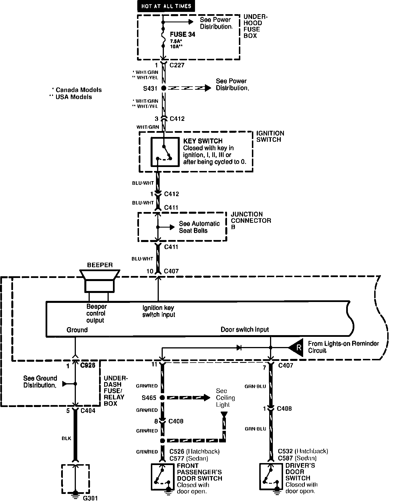
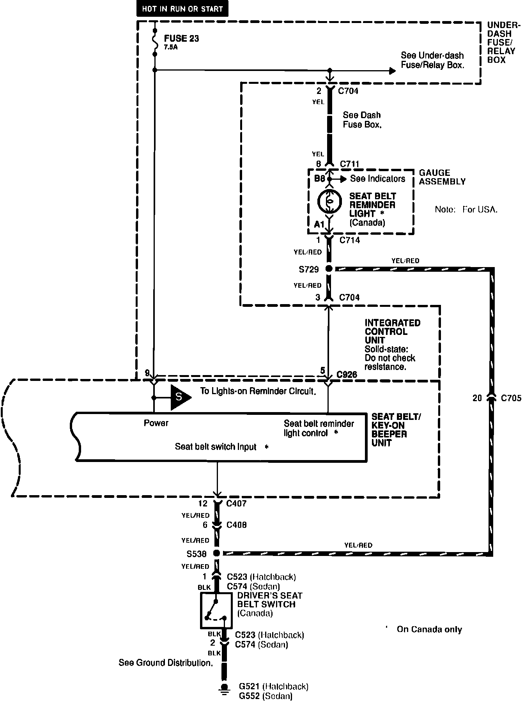
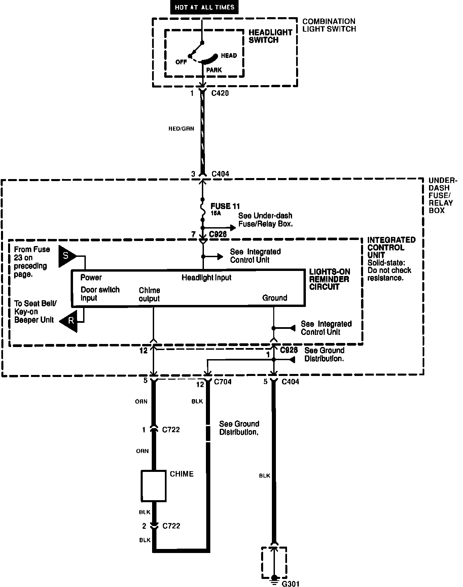

Operation CHARM
: Car repair manuals for everyone.
Home
>>
Acura
>>
1992
>>
Integra L4-1834cc 1.8L DOHC FI
>>
Repair and Diagnosis
>>
Instrument Panel, Gauges and Warning Indicators
>>
Headlamp Reminder Indicator
>>
Diagrams
>>
Electrical Diagrams
Electrical Diagrams
Seat Belt, Lights-on, And Ignition Key Reminders:

Seat Belt, Lights-on, And Ignition Key Reminders:

Seat Belt, Lights-on, And Ignition Key Reminders:
